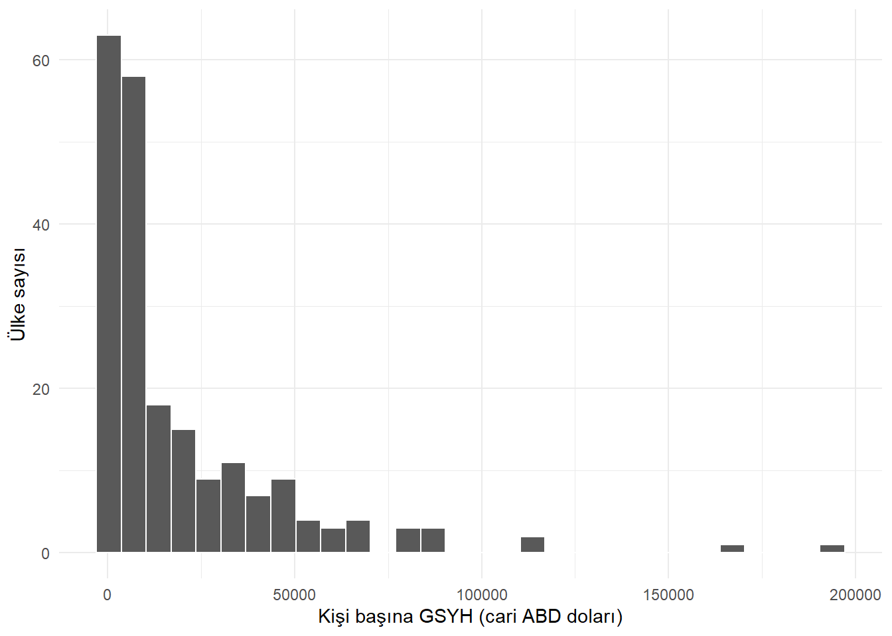
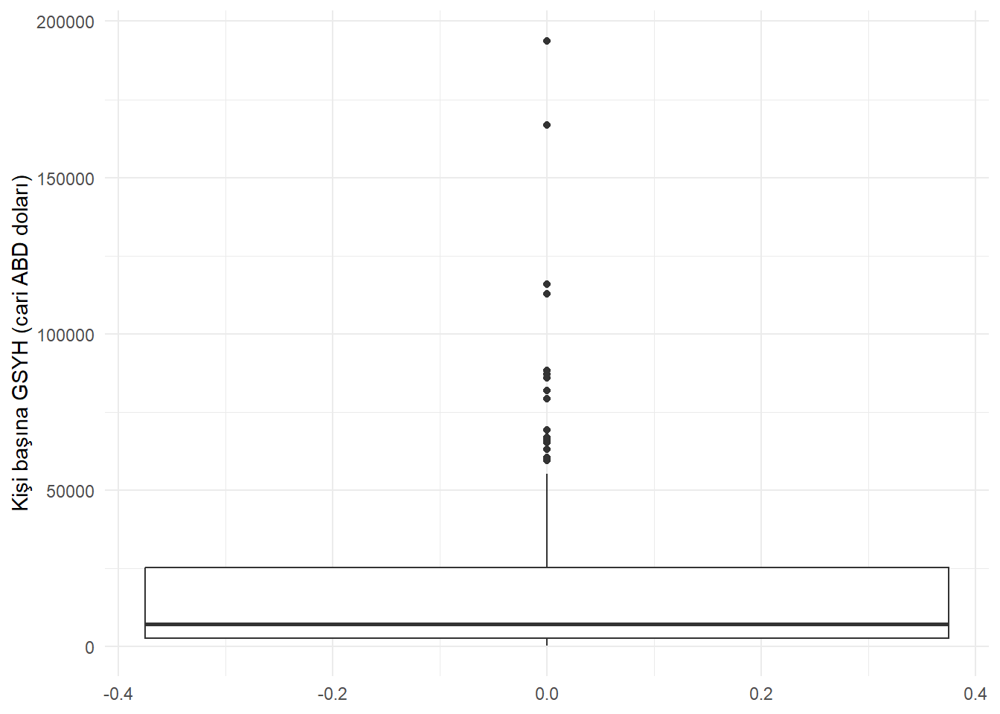
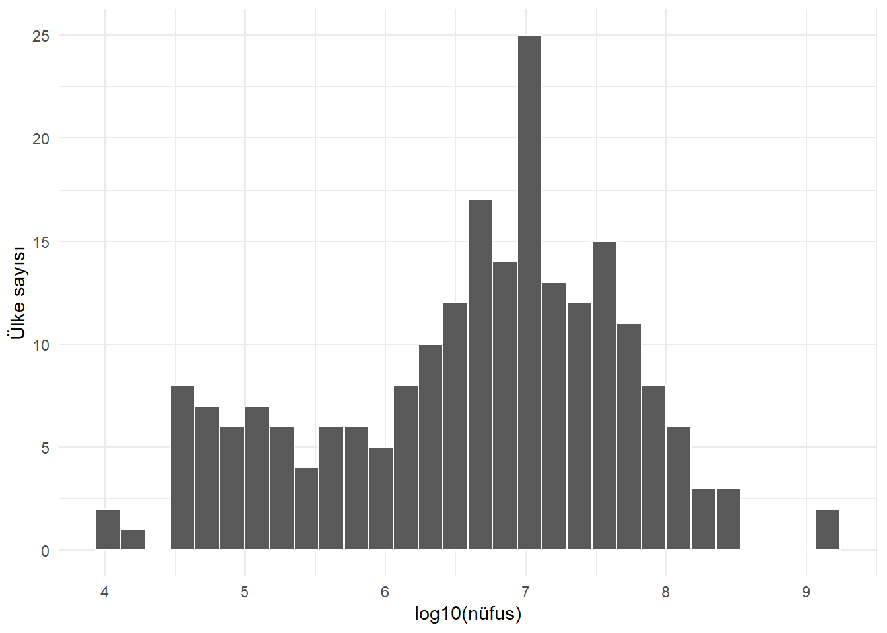
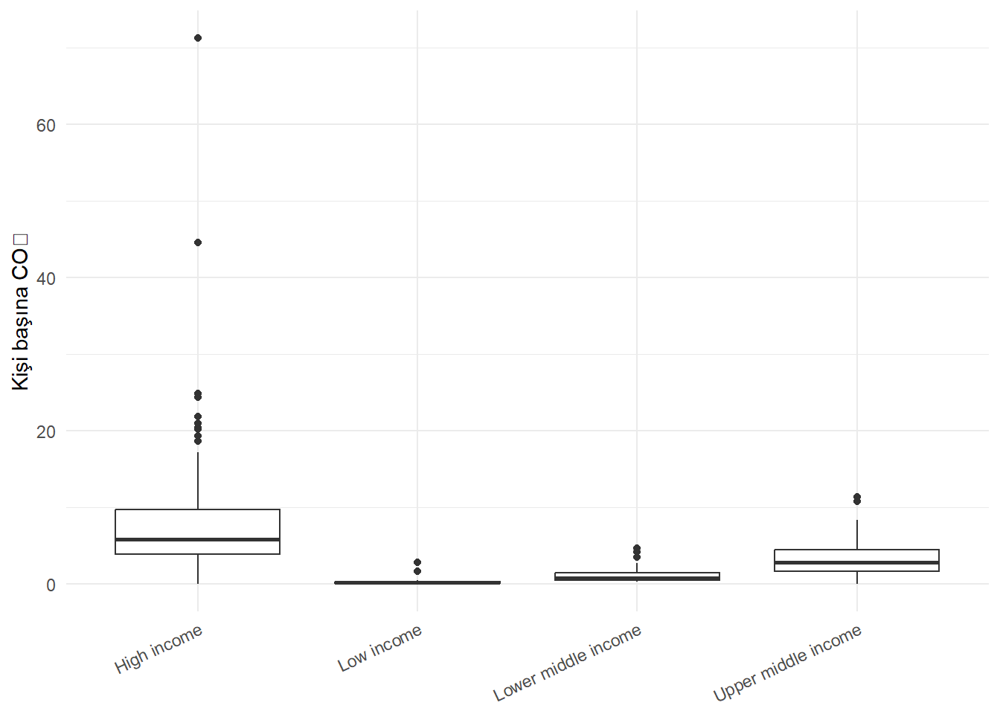

library(dplyr)
library(tidyr)
library(ggplot2)
countries <- readr::read_csv(
"data/countries.csv",
show_col_types = FALSE
)
indicator_dictionary <- readr::read_csv(
"data/indicator_dictionary.csv",
show_col_types = FALSE
)16 Aykırı Gözlemler
Bir ülkenin kişi başına geliri diğer ülkelerin çoğundan çok yüksek, nüfusu çok küçük veya enflasyonu olağan dışı olabilir. Bu gözlem bir veri giriş hatası da olabilir, dünyadaki gerçek bir eşitsizliği de yansıtabilir. Sayısal olarak uçta olmak, tek başına yanlış olmak anlamına gelmez.
Aykırı gözlem (outlier), seçilen değişkenler ve karşılaştırma grubu içinde genel örüntüden belirgin biçimde ayrılan gözlemdir. Tanımdaki üç unsur önemlidir:
- seçilen değişkenler: bir gözlem gelir bakımından aykırı, yaşam beklentisi bakımından sıradan olabilir;
- karşılaştırma grubu: küçük ada ekonomileri kendi aralarında sıradan, bütün ülkeler içinde sıra dışı görünebilir;
- genel örüntü: aykırılık yalnızca tek bir değerin büyüklüğü değil, değişkenler arası ilişkiye uymama biçimi de olabilir.
Bu bölümde aykırı gözlemleri bulma, açıklama ve yönetme sürecini ele alacağız. Amaç “hangi komut aykırıları siler?” sorusundan önce şu sorulara cevap vermektir:
- Gözlem neden sıra dışı görünüyor?
- Ölçüm veya veri işleme hatası olabilir mi?
- Gerçekse analiz sorusu bakımından hangi bilgiyi taşıyor?
- Kullanılan yöntem bu gözlemden ne kadar etkileniyor?
- Müdahale edilirse sonuç nasıl değişiyor?
ÖnemliAykırı gözlem bir karar değil, inceleme sinyalidir
IQR kuralı, z-puanı veya kutu grafiği bir gözlemi işaretleyebilir. İşaretleme, gözlemin silinmesi gerektiğini kanıtlamaz. Silme kararı veri kaynağı, alan bilgisi ve analiz amacıyla gerekçelendirilmelidir.
16.1 Veri ve Bağlam
Bu bölümde 2019 yılına ait ülke göstergelerini kullanacağız.
Önce kullanacağımız göstergelerin tanımlarını ve birimlerini kontrol edelim.
indicator_dictionary |>
filter(indicator %in% c(
"population_total",
"gdp_per_capita_usd",
"inflation_consumer_pct",
"co2_per_capita",
"school_enrollment_tertiary_pct"
)) |>
select(indicator, wdi_code, unit, description)Veri sözlüğü aykırılık kararında kritiktir. Örneğin yükseköğretimde brüt kayıt oranı, resmî yaş grubunun dışında eğitim alan kişileri de içerebilir ve 100’ü aşabilir. Bu nedenle “yüzde 100’den büyükse hatadır” kuralı burada yanlış olur.
16.2 Hata, Uç Değer ve Etkili Gözlem
Bu kavramlar birbirinden ayrılmalıdır.
Hatalı değer
Verinin temsil ettiği dünyayla uyuşmayan veya toplama sürecinde bozulmuş değerdir. Nüfusun negatif olması, ondalık ayırıcının kayması veya ülke kodunun yanlış eşleşmesi örnektir. Kaynaktan doğrulanabiliyorsa düzeltilir; doğrulanamıyorsa eksik olarak işaretlenebilir.
Uç değer
Dağılımın kuyruklarında kalan büyük veya küçük değerdir. Ülke nüfusları ve GSYH gibi değişkenlerde uç değerler doğal olarak beklenir. Dağılım sağa çarpık olduğu için birkaç büyük ülke ortalamayı güçlü biçimde etkiler.
Etkili gözlem
Bir modelden çıkarıldığında katsayıları, tahminleri veya uyum ölçülerini belirgin biçimde değiştiren gözlemdir. Uç değer her zaman etkili değildir; etkili gözlem de tek değişkende en uç değer olmak zorunda değildir.
| Durum | Temel soru | Olası işlem |
|---|---|---|
| Hatalı değer | Kaynakta yanlış mı? | Düzelt, yeniden edin veya eksik yap |
| Gerçek uç değer | Nadir ama mümkün mü? | Koru, işaretle, uygun yöntem seç |
| Etkili gözlem | Sonucu aşırı değiştiriyor mu? | Tanı ölçüleri ve duyarlılık analizi kullan |
Aykırı gözlemlerin neden klasik yöntemleri zorlayabildiğini kirlenme modeli ile görebiliriz. Ana veri dağılımı (F), farklı bir süreçten gelen dağılım (G), kirlenme oranı da () olsun. Gözlenen dağılım,
\[ F_{\varepsilon} = (1-\varepsilon)F + \varepsilon G \]
olarak yazılabilir. () küçük olsa bile (G)’nin çok uzak değerler üretmesi ortalama, standart sapma ve en küçük kareler katsayılarını belirgin biçimde değiştirebilir. Sağlam istatistiğin amacı aykırı gözlemleri otomatik olarak silmek değil, az sayıdaki kirlenmenin tahmin üzerindeki etkisini sınırlamaktır (Hampel vd. 1986; Rousseeuw ve Leroy 1987).
Bu bağlamda üç kuramsal kavram yararlıdır. Etki fonksiyonu, bir dağılıma çok küçük ağırlıkla eklenen gözlemin tahmin ediciyi ne kadar değiştirdiğini inceler. Kırılma noktası, tahmin edicinin keyfi biçimde bozulabilmesi için gereken en küçük kirlenme oranıdır. Örneklem ortalamasının kırılma noktası yaklaşık (1/n) iken medyanınki yüzde 50’ye yaklaşır. Maskeleme, birden fazla aykırı gözlemin birbirini sıradan göstermesi; süpürme (swamping) ise aykırıların merkez ve yayılımı bozarak sıradan gözlemleri aykırı göstermesidir. Bu kavramlar, neden tek bir eşik kuralının bütün veri yapılarında güvenilir olamayacağını açıklar (Barnett ve Lewis 1994).
16.3 Aykırılık Neden Oluşur?
Aykırı görünen bir gözlem şu kaynaklardan gelebilir:
- veri girişinde fazla sıfır veya yanlış ondalık işareti,
- ölçüm cihazı arızası,
- birim karışıklığı,
- farklı tanım veya veri toplama yöntemi,
- tabloların yanlış anahtarla birleştirilmesi,
- farklı alt toplulukların tek dağılımda karıştırılması,
- nadir fakat gerçek bir olay,
- doğal olarak ağır kuyruklu bir dağılım,
- zaman içindeki yapısal kırılma.
Bu nedenlerin bazıları veriyi düzeltmeyi, bazıları analiz tasarımını değiştirmeyi, bazıları ise gözlemi olduğu gibi korumayı gerektirir.
16.4 Önce Dağılımı Görmek
Kişi başına gelir değişkenini özetleyelim.
countries |>
summarise(
n = sum(!is.na(gdp_per_capita_usd)),
minimum = min(gdp_per_capita_usd, na.rm = TRUE),
q1 = quantile(gdp_per_capita_usd, 0.25, na.rm = TRUE),
medyan = median(gdp_per_capita_usd, na.rm = TRUE),
ortalama = mean(gdp_per_capita_usd, na.rm = TRUE),
q3 = quantile(gdp_per_capita_usd, 0.75, na.rm = TRUE),
maksimum = max(gdp_per_capita_usd, na.rm = TRUE)
)Ortalamanın medyandan büyük olması ve maksimumun üçüncü çeyrekten çok uzakta bulunması sağa çarpıklığa işaret eder.
countries |>
ggplot(aes(x = gdp_per_capita_usd)) +
geom_histogram(bins = 30, color = "white", na.rm = TRUE) +
labs(
x = "Kişi başına GSYH (cari ABD doları)",
y = "Ülke sayısı"
) +
theme_minimal()
Histogram dağılımın tamamını, kutu grafiği ise merkez ve kuyrukları sıkıştırılmış biçimde gösterir.
countries |>
ggplot(aes(y = gdp_per_capita_usd)) +
geom_boxplot(na.rm = TRUE) +
labs(
x = NULL,
y = "Kişi başına GSYH (cari ABD doları)"
) +
theme_minimal()
16.5 IQR Kuralı
Çeyrekler açıklığı:
\[ IQR = Q_3 - Q_1 \]
olarak tanımlanır. Yaygın kutu grafiği kuralı aşağıdaki sınırların dışında kalan değerleri işaretler:
\[ Alt\ sınır = Q_1 - 1.5 \times IQR \]
\[ Üst\ sınır = Q_3 + 1.5 \times IQR \]
Bu katsayı doğal bir yasa değildir. Tukey’in keşifsel kutu grafiği yaklaşımından gelen, dağılımdaki olası uçları görünür kılan bir işaretleme kuralıdır (Tukey 1977). Normal dağılım altında 1.5 IQR çitleri yaklaşık () standart sapmaya karşılık gelse de bu ilişki çarpık ve ağır kuyruklu dağılımlarda değişir. Dolayısıyla çitin dışında kalan gözlem “yanlış”, içinde kalan gözlem de kesin olarak “sorunsuz” değildir.
iqr_sinirlari <- function(x, katsayi = 1.5) {
q1 <- quantile(x, 0.25, na.rm = TRUE)
q3 <- quantile(x, 0.75, na.rm = TRUE)
iqr <- q3 - q1
c(
alt = q1 - katsayi * iqr,
ust = q3 + katsayi * iqr
)
}
gdp_sinirlari <- iqr_sinirlari(countries$gdp_per_capita_usd)
gdp_sinirlari alt.25% ust.75%
-31444.4 59115.3 countries_iqr <- countries |>
mutate(
gdp_iqr_aykiri =
gdp_per_capita_usd < gdp_sinirlari["alt"] |
gdp_per_capita_usd > gdp_sinirlari["ust"]
)
countries_iqr |>
filter(gdp_iqr_aykiri %in% TRUE) |>
select(country, region, income_group, gdp_per_capita_usd) |>
arrange(desc(gdp_per_capita_usd))Bu ülkelerin çoğu hatalı değildir; küresel gelir dağılımının yüksek ucundadır. IQR kuralı dağılımın bağlamını bilmez.
Grup içinde IQR
Bütün ülkeleri tek dağılımda karşılaştırmak yerine gelir grubu içinde sıra dışılığı inceleyebiliriz.
countries |>
group_by(income_group) |>
mutate(
q1 = quantile(gdp_per_capita_usd, 0.25, na.rm = TRUE),
q3 = quantile(gdp_per_capita_usd, 0.75, na.rm = TRUE),
iqr = q3 - q1,
grup_aykiri =
gdp_per_capita_usd < q1 - 1.5 * iqr |
gdp_per_capita_usd > q3 + 1.5 * iqr
) |>
ungroup() |>
filter(grup_aykiri %in% TRUE) |>
select(country, income_group, gdp_per_capita_usd) |>
arrange(income_group, desc(gdp_per_capita_usd))Karşılaştırma grubu değiştiğinde aykırı etiketi de değişebilir. Bu, aykırılığın bağlamsal olduğunu gösterir.
16.6 Z-Puanı ve Sınırlılıkları
Z-puanı, bir değerin ortalamadan kaç standart sapma uzakta olduğunu gösterir:
\[ z_i = \frac{x_i - \bar{x}}{s} \]
countries |>
mutate(
inflation_z = as.numeric(scale(inflation_consumer_pct))
) |>
filter(abs(inflation_z) > 3) |>
select(country, inflation_consumer_pct, inflation_z) |>
arrange(desc(abs(inflation_z)))|z| > 3 sık kullanılan bir işaretleme eşiğidir. Ancak ortalama ve standart sapma aykırı değerlerden etkilendiği için ağır kuyruklu veya çok çarpık dağılımlarda z-puanı yanıltıcı olabilir.
16.7 Sağlam Z-Puanı: Medyan ve MAD
Ortalama yerine medyanı, standart sapma yerine medyan mutlak sapmayı (MAD) kullanabiliriz:
\[ MAD = median(|x_i - median(x)|) \]
R’deki mad() işlevi varsayılan olarak normal dağılımla karşılaştırılabilir bir ölçek elde etmek için 1.4826 düzeltme katsayısı kullanır.
medyan_co2 <- median(countries$co2_per_capita, na.rm = TRUE)
mad_co2 <- mad(countries$co2_per_capita, na.rm = TRUE)
countries |>
mutate(
co2_robust_z = (co2_per_capita - medyan_co2) / mad_co2
) |>
filter(abs(co2_robust_z) > 3.5) |>
select(country, co2_per_capita, co2_robust_z) |>
arrange(desc(abs(co2_robust_z)))3.5 yine bağlama bağlı bir inceleme eşiğidir. Sağlam ölçüler aykırı değerlerden daha az etkilenir; fakat işaretlenen gözlemlerin nedenini açıklamaz.
16.8 Dönüşüm Aykırılık Algısını Nasıl Değiştirir?
Nüfus dağılımında küçük ülke ve büyük ülkeler arasında çok büyük fark vardır. Logaritmik ölçekte çarpımsal farklar daha görünür hale gelir.
countries |>
select(country, population_total) |>
pivot_longer(
cols = population_total,
names_to = "degisken",
values_to = "deger"
) |>
mutate(
log10_deger = log10(deger)
) |>
ggplot(aes(x = log10_deger)) +
geom_histogram(bins = 30, color = "white") +
labs(
x = "log10(nüfus)",
y = "Ülke sayısı"
) +
theme_minimal()
Log dönüşümü gözlemi silmez; ölçekteki uzaklıkları değiştirir. Özgün ölçekte yüz milyonluk farklar baskınken log ölçekte oranlar öne çıkar. Dönüşümleri Bölüm 17 bölümünde ayrıntılı ele alacağız.
16.9 Çok Değişkenli Aykırılık
Bir ülke tek tek değişkenlerde uçta olmayabilir; fakat değişkenlerin birleşimi sıra dışı olabilir. Örneğin kişi başına gelirine göre beklenmedik derecede düşük internet kullanımı çok değişkenli bir aykırılık oluşturabilir.
Mahalanobis uzaklığı
Mahalanobis uzaklığı değişkenler arası korelasyonu hesaba katar (Mahalanobis 1936):
\[ D_i^2 = (x_i - \bar{x})^T S^{-1}(x_i - \bar{x}) \]
cok_degiskenli <- countries |>
select(
country,
gdp_per_capita_usd,
internet_users_pct,
life_expectancy_total
) |>
drop_na() |>
mutate(
log_gdp = log(gdp_per_capita_usd)
)
x <- cok_degiskenli |>
select(log_gdp, internet_users_pct, life_expectancy_total)
cok_degiskenli$mahalanobis_d2 <- mahalanobis(
x,
center = colMeans(x),
cov = cov(x)
)
esik <- qchisq(0.99, df = ncol(x))
cok_degiskenli |>
filter(mahalanobis_d2 > esik) |>
arrange(desc(mahalanobis_d2)) |>
select(country, mahalanobis_d2, everything())Ki-kare eşiği, çok değişkenli normallik ve güvenilir kovaryans tahmini gibi varsayımlara dayanır. Ayrıca klasik ortalama ve kovaryans matrisi aykırı gözlemlerden etkilenir. Bu nedenle Mahalanobis uzaklığı da otomatik silme kuralı değildir.
Formüldeki (S^{-1}), güçlü biçimde birlikte değişen yönlerdeki uzaklığı küçültür; zayıf değişkenlik gösteren yönlerdeki uzaklığı büyütür. Başka bir deyişle yöntem, ham Öklid uzaklığını veri bulutunun eliptik geometrisine göre düzeltir. Fakat merkez ve kovaryans aykırılardan hesaplandığı için maskeleme oluşabilir. Çok değişkenli konum ve yayılım için minimum kovaryans determinantı gibi sağlam tahminler bu sorunu azaltabilir; yine de değişken seçimi, örneklem büyüklüğü ve dağılım varsayımları ayrıca değerlendirilmelidir (Rousseeuw ve Leroy 1987).
NotBoyut arttıkça uzaklık zorlaşır
Çok sayıda değişken ve az gözlem olduğunda kovaryans matrisi kararsız veya tekil olabilir. İlgisiz değişken eklemek yakınlık kavramını zayıflatabilir. Çok değişkenli aykırılık analizi, değişken seçimi ve ölçeklendirme kararlarıyla birlikte yürütülmelidir.
16.10 Model İçinde Etkili Gözlemler
Kişi başına gelir ile yaşam beklentisi arasındaki ilişkiyi basit bir doğrusal modelle inceleyelim. Geliri log ölçekte kullanmak ilişkiyi daha uygun temsil eder.
Regresyonda “aykırılık” tek bir sayı değildir. Büyük artık, gözlenen yanıtın model tahmininden uzak olduğunu; yüksek kaldıraç, gözlemin yordayıcı uzayında merkezden uzakta olduğunu gösterir. Bu ikisi birleştiğinde gözlem katsayıları güçlü biçimde çekebilir. Cook uzaklığı, bir gözlem çıkarıldığında uyarlanmış değerlerin topluca ne kadar değişeceğini yaklaşık olarak özetler (Cook 1977). Bu yüzden yalnızca büyük yanıta veya yalnızca büyük artığa bakmak etkili gözlemi tanımlamaya yetmez.
yasam_model_verisi <- countries |>
select(country, life_expectancy_total, gdp_per_capita_usd) |>
drop_na() |>
mutate(log_gdp = log(gdp_per_capita_usd))
yasam_modeli <- lm(
life_expectancy_total ~ log_gdp,
data = yasam_model_verisi
)
yasam_model_verisi <- yasam_model_verisi |>
mutate(
student_artik = rstudent(yasam_modeli),
kaldirac = hatvalues(yasam_modeli),
cook_uzakligi = cooks.distance(yasam_modeli)
)Üç farklı tanı ölçüsü farklı sorulara cevap verir:
- Studentlaştırılmış artık: gözlenen sonuç model tahmininden ne kadar uzakta?
- Kaldıraç: gözlem yordayıcı uzayında ne kadar sıra dışı?
- Cook uzaklığı: gözlem model katsayılarını birlikte ne kadar etkiliyor?
yasam_model_verisi |>
arrange(desc(cook_uzakligi)) |>
select(
country,
life_expectancy_total,
gdp_per_capita_usd,
student_artik,
kaldirac,
cook_uzakligi
) |>
slice_head(n = 10)Yaygın bir inceleme eşiği 4 / n olsa da bu da kesin silme sınırı değildir.
cook_esigi <- 4 / nrow(yasam_model_verisi)
yasam_model_verisi |>
filter(cook_uzakligi > cook_esigi) |>
arrange(desc(cook_uzakligi)) |>
select(country, cook_uzakligi)Model biçimi yanlışsa çok sayıda gözlem etkili görünebilir. Örneğin doğrusal olmayan bir ilişkiye doğrusal çizgi uydurmak, veri sorunu değil model sorunu üretir.
16.11 Aykırı Gözlemlerle Ne Yapılabilir?
1. Kaynağı doğrulamak
İlk seçenek istatistiksel değil, veri yönetimsel olmalıdır. Birim, yıl, ülke kodu ve özgün kaynaktaki değer kontrol edilir. Hata doğrulanırsa kaynak bilgiyle düzeltilir; tahminle sessizce değiştirilmez.
2. Gözlemi koruyup işaretlemek
countries_isaretli <- countries |>
mutate(
yuksek_co2_inceleme = co2_per_capita > 20,
yuksek_enflasyon_inceleme = inflation_consumer_pct > 50
)Bayrak sütunları veri soyunu korur ve farklı analizlerin aynı kurala erişmesini sağlar.
3. Uygun dönüşüm kullanmak
Logaritma gibi dönüşümler çarpık dağılımlarda büyük değerlerin baskınlığını azaltabilir. Ancak dönüşüm hata düzeltmez ve yorum ölçeğini değiştirir.
4. Sağlam özetler veya modeller kullanmak
Ortalama yerine medyan, standart sapma yerine IQR veya MAD kullanılabilir. Amaç gözlemi yok etmek değil, özetin birkaç uç değere aşırı bağımlılığını azaltmaktır.
countries |>
summarise(
co2_ortalama = mean(co2_per_capita, na.rm = TRUE),
co2_medyan = median(co2_per_capita, na.rm = TRUE),
co2_sd = sd(co2_per_capita, na.rm = TRUE),
co2_iqr = IQR(co2_per_capita, na.rm = TRUE)
)5. Alt grupları ayrı değerlendirmek
Farklı veri üretim süreçleri tek tabloda karışmış olabilir. Gelir grubu, bölge veya ülke türüne göre ayrı modeller kurmak bazen daha anlamlıdır. Ancak alt grup kararı sonuçlara bakarak keyfî biçimde verilmemelidir.
6. Winsorization uygulamak
Winsorization, kuyruklardaki değerleri belirli yüzdelik sınırlarında keser; gözlemleri silmez.
winsorize <- function(x, olasilik = c(0.01, 0.99)) {
sinir <- quantile(x, probs = olasilik, na.rm = TRUE)
pmin(pmax(x, sinir[1]), sinir[2])
}
countries |>
transmute(
country,
co2_per_capita,
co2_winsor = winsorize(co2_per_capita)
) |>
arrange(desc(co2_per_capita)) |>
slice_head(n = 8)Bu yöntem kuyruk bilgisini değiştirir. Sınırlar ve gerekçe raporlanmalı; mümkünse özgün veriyle duyarlılık analizi yapılmalıdır.
7. Gerekçeli biçimde çıkarmak
Gözlem doğrulanmış bir hata ise veya önceden tanımlanan hedef evrenin dışında kalıyorsa çıkarılabilir. Örneğin analiz yalnızca bağımsız devletleri kapsayacaksa veri sözlüğündeki ülke türü bilgisiyle kapsam belirlenebilir. “Sonucu bozduğu için” silmek geçerli bir gerekçe değildir.
16.12 Duyarlılık Analizi
Etkili gözlemleri dışarıda bırakan model ile tam veri modelini karşılaştıralım.
etkili_mi <- yasam_model_verisi$cook_uzakligi > cook_esigi
model_tam <- lm(
life_expectancy_total ~ log_gdp,
data = yasam_model_verisi
)
model_sinirli <- lm(
life_expectancy_total ~ log_gdp,
data = yasam_model_verisi[!etkili_mi, ]
)
rbind(
tam_veri = coef(model_tam),
etkili_gozlemler_disarida = coef(model_sinirli)
) (Intercept) log_gdp
tam_veri 32.78104 4.509775
etkili_gozlemler_disarida 34.93805 4.311395Katsayılar anlamlı ölçüde değişiyorsa sonuç belirli gözlemlere duyarlıdır. Bu, otomatik olarak sınırlı modelin doğru olduğunu göstermez. Her iki sonuç ve gözlem kararının gerekçesi raporlanmalıdır.
16.13 Modelleme ve Veri Sızıntısı
IQR sınırı, ortalama, standart sapma, MAD ve winsorization yüzdelikleri veriden öğrenilir. Tahmin modelinde bu değerler yalnızca eğitim verisinden hesaplanmalı, test verisine aynı biçimde uygulanmalıdır.
Test verisindeki uç değerleri gördükten sonra sınırı değiştirmek test kümesini model geliştirme sürecine dahil eder. Yeni veride ortaya çıkan daha büyük bir değer de eğitimdeki maksimuma zorla eşitlenmemelidir; uygulama kuralı önceden açıkça tanımlanmalıdır.
16.14 Sık Yapılan Hatalar
Kutu grafiğindeki her noktayı silmek
Kutu grafiği dağılıma dayalı bir işaretleme yapar. Gerçek dünyadaki doğruluğu veya analiz kapsamını bilmez.
Aykırılığı yalnızca standart sapmayla tanımlamak
Ortalama ve standart sapma, aranan aykırı değerlerden etkilenir. Çarpık dağılımlarda sağlam ölçüler ve dönüşümler de incelenmelidir.
Birim ve tanımı kontrol etmemek
Brüt oranlar 100’ü aşabilir; kişi başına ve toplam göstergeler farklı ölçeklerdedir. Veri sözlüğü görülmeden sınır konmamalıdır.
Tek değişkenli kontrolü yeterli görmek
Her sütunda sıradan olan bir gözlem, değişkenlerin birleşiminde sıra dışı olabilir.
Aykırı gözlem ile yüksek kaldıraç noktasını karıştırmak
Yüksek kaldıraç yordayıcı uzayındaki sıra dışılığı, büyük artık sonuçtaki uyumsuzluğu, Cook uzaklığı ise model etkisini ölçer.
İşaretlenen değeri sessizce değiştirmek
Winsorization, dönüşüm veya silme veri ve sonucu değiştirir. Özgün değer korunmalı, işlem gerekçesi kaydedilmelidir.
Test verisine göre sınır belirlemek
Test dağılımından öğrenilen eşikler performans değerlendirmesini etkileyebilir. Sınırlar eğitim verisinden öğrenilmelidir.
16.15 Egzersizler
Egzersiz 1
population_total için IQR sınırlarını hesaplayın. İşaretlenen ülkelerin gerçekten hatalı olduğunu söyleyebilir misiniz?
Egzersiz 2
gdp_growth_pct değişkeni için |z| > 3 ve sağlam z-puanı |z_r| > 3.5 kurallarını karşılaştırın.
Egzersiz 3
Kişi başına CO₂ dağılımını gelir grubuna göre kutu grafiğiyle gösterin. Karşılaştırma grubunun aykırılık yorumunu nasıl değiştirdiğini açıklayın.
Egzersiz 4
school_enrollment_tertiary_pct > 100 gözlemlerini bulun. Veri sözlüğünü kullanarak bu değerlerin neden otomatik hata sayılamayacağını açıklayın.
Egzersiz 5
gdp_per_capita_usd için özgün ve logaritmik ölçekte IQR bayraklarını karşılaştırın.
Egzersiz 6
Mahalanobis örneğine infant_mortality_rate değişkenini ekleyin. Eksik gözlemler ve kovaryans yapısı nasıl değişiyor?
Egzersiz 7
Yaşam beklentisi modelindeki Cook uzaklığı en yüksek üç ülkeyi bulun. Bu ülkeleri çıkarmadan önce hangi kaynak kontrollerini yapardınız?
Egzersiz 8
CO₂ değişkenine %5 ve %95 sınırlarıyla winsorization uygulayın. Ortalama ve medyanı işlem öncesi ve sonrası karşılaştırın.
Egzersiz 9
Bir aykırı gözlemi silme, dönüştürme ve sağlam yöntemle koruma seçeneklerinin bilimsel yorum üzerindeki farklarını açıklayın.
Egzersiz 10
Çapraz doğrulamada IQR sınırlarının neden her eğitim katında yeniden hesaplanması gerektiğini açıklayın.
16.16 Egzersiz Çözümleri
Çözüm 1
nufus_sinirlari <- iqr_sinirlari(countries$population_total)
countries |>
filter(
population_total < nufus_sinirlari["alt"] |
population_total > nufus_sinirlari["ust"]
) |>
select(country, population_total) |>
arrange(desc(population_total))İşaretlenen büyük nüfuslar gerçek ülke büyüklüklerini yansıtabilir. Kural yalnızca dağılımın merkezinden uzaklığı gösterir.
Çözüm 2
buyume_medyan <- median(countries$gdp_growth_pct, na.rm = TRUE)
buyume_mad <- mad(countries$gdp_growth_pct, na.rm = TRUE)
countries |>
mutate(
z = as.numeric(scale(gdp_growth_pct)),
robust_z = (gdp_growth_pct - buyume_medyan) / buyume_mad,
klasik_bayrak = abs(z) > 3,
saglam_bayrak = abs(robust_z) > 3.5
) |>
filter(klasik_bayrak %in% TRUE | saglam_bayrak %in% TRUE) |>
select(country, gdp_growth_pct, z, robust_z, klasik_bayrak, saglam_bayrak)Kurallar farklı merkez ve ölçek ölçüleri kullandığı için aynı gözlemleri seçmek zorunda değildir.
Çözüm 3
countries |>
ggplot(aes(x = income_group, y = co2_per_capita)) +
geom_boxplot(na.rm = TRUE) +
labs(x = NULL, y = "Kişi başına CO₂") +
theme_minimal() +
theme(axis.text.x = element_text(angle = 25, hjust = 1))
Aynı CO₂ değeri düşük gelir grubunda sıra dışı, yüksek gelir grubunda sıradan olabilir.
Çözüm 4
countries |>
filter(school_enrollment_tertiary_pct > 100) |>
select(country, school_enrollment_tertiary_pct) |>
arrange(desc(school_enrollment_tertiary_pct))Brüt kayıt oranının payında yaş grubundan bağımsız bütün kayıtlar bulunabilir; paydasında ise resmî yaş grubundaki nüfus vardır. Bu nedenle oran 100’ü aşabilir.
Çözüm 5
gdp_log <- log(countries$gdp_per_capita_usd)
sinir_ozgun <- iqr_sinirlari(countries$gdp_per_capita_usd)
sinir_log <- iqr_sinirlari(gdp_log)
countries |>
transmute(
country,
gdp_per_capita_usd,
ozgun_bayrak =
gdp_per_capita_usd < sinir_ozgun["alt"] |
gdp_per_capita_usd > sinir_ozgun["ust"],
log_bayrak =
log(gdp_per_capita_usd) < sinir_log["alt"] |
log(gdp_per_capita_usd) > sinir_log["ust"]
) |>
filter(ozgun_bayrak %in% TRUE | log_bayrak %in% TRUE)Log dönüşümü büyük değerler arasındaki mutlak farkı sıkıştırdığı için bayraklar değişebilir.
Çözüm 6
cok_degiskenli_4 <- countries |>
select(
country,
gdp_per_capita_usd,
internet_users_pct,
life_expectancy_total,
infant_mortality_rate
) |>
drop_na() |>
mutate(log_gdp = log(gdp_per_capita_usd))
x4 <- cok_degiskenli_4 |>
select(log_gdp, internet_users_pct, life_expectancy_total, infant_mortality_rate)
cok_degiskenli_4 |>
mutate(
mahalanobis_d2 = mahalanobis(x4, colMeans(x4), cov(x4)),
bayrak = mahalanobis_d2 > qchisq(0.99, df = ncol(x4))
) |>
filter(bayrak) |>
arrange(desc(mahalanobis_d2)) |>
select(country, mahalanobis_d2)Yeni değişken eksik olduğu için tam gözlem sayısı azalır; kovaryans matrisi ve uzaklık tanımı da değişir.
Çözüm 7
yasam_model_verisi |>
slice_max(cook_uzakligi, n = 3) |>
select(country, cook_uzakligi, life_expectancy_total, gdp_per_capita_usd)Yıl, birim, ülke kodu eşleşmesi, göstergenin özgün kaynağı ve ülkeye özgü olaylar kontrol edilmelidir. Model biçiminin yetersizliği de değerlendirilmelidir.
Çözüm 8
co2_w <- winsorize(countries$co2_per_capita, c(0.05, 0.95))
data.frame(
seri = c("Özgün", "Winsorized"),
ortalama = c(
mean(countries$co2_per_capita, na.rm = TRUE),
mean(co2_w, na.rm = TRUE)
),
medyan = c(
median(countries$co2_per_capita, na.rm = TRUE),
median(co2_w, na.rm = TRUE)
)
)Kuyruk değiştirilince ortalama daha belirgin, medyan ise genellikle daha az değişir.
Çözüm 9
Silme hedef evreni ve örneklem büyüklüğünü değiştirir. Dönüşüm gözlemi korur, fakat ilişkiyi ve katsayı yorumunu başka ölçeğe taşır. Sağlam yöntem gözlemi koruyarak etkisini sınırlar. Seçim araştırma sorusu ve veri üretim süreciyle gerekçelendirilmelidir.
Çözüm 10
Her doğrulama katı görülmemiş veri rolündedir. Eşik doğrulama katından da öğrenilirse değerlendirme verisi eğitim sürecine bilgi taşır. Bu nedenle IQR sınırları yalnızca o katın eğitim bölümünde hesaplanmalı ve doğrulama bölümüne uygulanmalıdır.
16.17 Bölüm Özeti
Aykırı gözlem, karşılaştırma grubu ve seçilen değişkenler içinde genel örüntüden ayrılan gözlemdir. Hatalı değer, uç değer ve modelde etkili gözlem aynı kavram değildir. Bir gözlem veri hatası olabilir; doğal bir kuyruğu, ayrı bir alt grubu veya önemli bir gerçekliği de temsil edebilir.
Histogram ve kutu grafiği dağılımı görünür kılar. IQR ve z-puanı gibi kurallar inceleme listesi üretir; sağlam z-puanı aykırı değerlerden daha az etkilenen merkez ve ölçek kullanır. Mahalanobis uzaklığı değişkenlerin birleşimindeki sıra dışılığı, artık-kaldıraç-Cook ölçüleri ise model içindeki etkiyi inceler.
Uygun yaklaşım kaynağı doğrulamak, gözlemi işaretlemek, dönüşüm veya sağlam yöntem kullanmak, alt grupları incelemek, winsorization uygulamak ya da gerekçeli biçimde çıkarmak olabilir. Kararın etkisi duyarlılık analiziyle gösterilmeli; öğrenilen sınırlar modelleme sırasında yalnızca eğitim verisinden hesaplanmalıdır.
16.18 Kaynaklar ve Ek Okuma
Aykırı gözlemlerin sınıflandırılması ve klasik tanı yöntemleri için (Barnett ve Lewis 1994), sağlam istatistiğin etki ve kırılma kavramları için (Hampel vd. 1986; Rousseeuw ve Leroy 1987), keşifsel kutu grafiği yaklaşımı için (Tukey 1977) önerilir. Çok değişkenli uzaklığın özgün tanımı (Mahalanobis 1936), regresyondaki Cook uzaklığı ise (Cook 1977) tarafından verilmiştir. Bölümün ülke verileri World Development Indicators kaynağına dayanır (World Bank 2026).